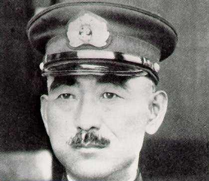

Forums galactiques > Assemblée Galactique : diplomatie officielle > Question au gouvernement
Pages : 1
| tanaka Respect diplomatique : 57  02/02 ETU 14:13 | Score : 6 Détails Les écrans de l’assemblée s’allumèrent et apparut le visage du général Tanaka.
« Bonjour honorables représentants galactiques et chers collègues. Voila quelques semaines, je me présentais à vous et depuis je ne suis pas intervenu dans cette vénérable assemblée. La cause en était l’agitation qui régnait sur ma planète mère, ainsi que dans mon système. La situation étant depuis, quelque peu stabilisée, j’ai enfin le temps de m’adresser à vous. Je ne peux pas encore être physiquement parmi vous, car nos scientifiques ont encore des soucis de mise au point de notre premier moteur à hyper fusion. Cependant cette liaison holographique suffira pour le moment. Depuis le rétablissement des communications avec cette assemblée, je suis quotidiennement les débats qui s’y déroulent et depuis plusieurs jours une polémique fait rage quant à l’organisation d’un « jeu ». Tout d’abord, au nom du Nouvel Empire du Soleil Rouge, permettez moi de donner mon avis sur cette proposition, qui n’a d’un jeu que le nom et qui s’apparente plus à un génocide. Je trouve tout simplement cette pratique, barbare et non digne de tout peuple civilisé. De plus, l’organisation de telles atrocités et de destruction massive d’unités militaires du commandant désigné, aura de graves conséquences diplomatico-militaire et ne fera que détruire les équilibres géopolitiques. En conséquence, nous ne participerons d’aucune manière que ce soit à ce massacre organisé. Ni comme bourreau, cela va de soi, ni comme des lâches en payant une somme d’argent pour ne pas participer au pseudo tirage au sort. Nous préférons mourir debout plutôt que de vivre à genoux. Mais l’objet de mon intervention en ce lieu est de connaître la position officielle du gouvernement sur cette affaire. Je vous remercie de votre attention et souhaite obtenir une réponse rapidement. » | ||
| Wensicia Corrino Respect diplomatique : 1642  02/02 ETU 14:58 | Score : 2 Détails Le Gouvernement est au service du Conseil Galactique et au service des commandants de cette Galaxie, au sens général. Il n'a donc aucun avis concernant les affaires propres aux coalitions. Il n'a donc aucune compétence pour répondre à votre question ou même pour intervenir à l'Assemblée Galactique.
| ||
| tanaka Respect diplomatique : 57 02/02 ETU 16:40 | Score : 1 Détails Communiqué du Général Tanaka.
Chers collègues, honorable Présidente du conseil galactique, ma question ne s’adressait pas à vous personnellement, mais bel et bien à l’ensemble du gouvernement, ainsi que du conseil galactique et de ses représentants. C’est pourquoi je m’étonne, de vous entendre répondre si promptement, même si je vous avais demandé une réponse rapide, sans avoir au préalable consulter l’ensemble du conseil. De plus, s’il s’agit réellement de la position officielle du conseil, elle me paraît des plus étrange. En effet, vous dites vous-même, que le conseil œuvre pour le bien général, hors il s’agit bien là d’un cas touchant l’ensemble des commandants et ce n’est pas, comme vous le laissez entendre une affaire interne à une coalition, mais bien d’une coalition isolée qui menace les grands équilibres stratégiques de la galaxie. Je demande donc des éclaircissements, au conseil galactique dans son ensemble, au sujet de cette affaire. Je vous remercie et vous prie de m’excuser quant à mon insistance. | ||
| Judayan Respect diplomatique : 527  02/02 ETU 16:55 | Score : 0 Détails Aucune coalition n'a, me semble t'il et vérification est nécessaire, porté le sujet au sein du Conseil, si nul ne le fait le Conseil n'a aucune raison de se prononcer!
| ||
| Tyrian Respect diplomatique : 1334  02/02 ETU 17:01  | Score : 0 Détails Commandant Tanaka
En premier lieu, j'aimerai que vous vous adressiez avec un peu plus de respect, voire de déférence à l’Impératrice. Ensuite, sa réponse est parfaitement adaptée. Si vous souhaitez que votre « réclamation » parvienne au conseil galactique, vous devez en faire la proposition à votre coalition. Cette dernière, si elle fait partie du dit conseil, pourra par l’intermédiaire d’un de ses représentants, y soulever le sujet. Mais peut-être n’avez-vous pas pris le temps de vous informer des rouages qui gouvernent la galaxie ! Dans ce cas, vous faites du bruit pour rien. Quant au sujet lui-même. Et là je m’exprime au nom de ma coalition, que vous approuviez ou pas, peut me chaud ! Et pour terminer,,,, Nouveau venu en cette galaxie, commencez pas prouver votre valeur avant d’émettre des critiques à tout va. | ||
| Wensicia Corrino Respect diplomatique : 1642 02/02 ETU 17:33 | Score : 1 Détails Cher Tanaka,
Je reprends : le Gouvernement est au service du Conseil Galactique. Comme Présidente du Conseil, j'assume la gestion de cette administration. Le Gouvernement n'a aucune existence en lui-même, il n'a donc aucun avis ni aucune indépendance. D'autre part, je me vois mal assumer mon rôle si je devais réunir le Conseil Galactique avant de prononcer la moindre parole ! Surtout quand la question repose sur les compétences du Gouvernement qui, justement, n'a aucune compétence. A dessein et volontairement. La Liberté de tous passe justement par l'absence totale de gouvernement et d'instance supérieure dotée de pouvoirs répressifs. Certains ont bien tenté, sous couvert de démocratie et autres sottises ou billevesées, d'installer la dictature des notables dans cette Galaxie mais en vain. Si vous souhaitez réagir au jeu proposé par la Légion des Glyphes, il existe déjà une salle à cet effet. Cela limitera la dispersion des discussions et les répétitions d'arguments. | ||
| tanaka Respect diplomatique : 57 02/02 ETU 21:54 | Score : 2 Détails Les écrans de l’assemblée s’allumèrent et apparut la passerelle de commandement d’un vaisseau de guerre. On pouvait voir, de dos, le pilote qui appuyait sur divers boutons et devant lui, à travers la verrière, le noir intersidéral constellé d’étoiles de différentes luminosités. Un soleil rouge complétait la scène. Le général Tanaka entra dans le champs de la camera et commença à parler.
« Honorables représentants galactiques et chers collègues. Commandant Tyrian, En premier lieu, j’aimerai que vous vous adressiez à moi avec un peu plus de respect, je vous fais grâce de la déférence, je ne vous en demande pas tant. En effet, il n’y a rien dans mes propos, ni dans mon communiqué, qui ne soit marqué du plus grand respect. Mais peut être considérez vous votre femme comme pas assez honorable. Car voilà comment j’ai qualifié votre charmante épouse ; honorable présidente. Par conséquent, vous serez bien aimable de ne plus m’interpellez de la sorte si vous ne voulez pas que nous réglions cela d’homme à homme et que vous ne tâtiez de mon sabre. Quant au sujet lui-même, et là je m’exprime au nom de mon peuple, qui n’est pas moins respectable que le votre ou celui de votre coalition, que vous ayez pris un coup de chaud ou pas, peu me chaut. Mais peut être n’avez-vous pas pris le temps d’ouvrir une encyclopédie avant d’ouvrir votre bouche. Et pour en terminer avec vous, ancien de cette galaxie, moi, nouveau venu en cette galaxie n’ai rien à prouvez, ni à vous ni à personne d’autre, avant de donner mon opinion. Apres cette mise au point fastidieuse mais nécessaire, permettez moi, mes chers collègues, de résumer la situation. Premier point ; le gouvernement qui est au service du conseil galactique et des commandants de cette galaxie, ce gouvernement qui n’a ni avis ni indépendance ni compétence, ce gouvernement dont la présidente assume l’administration et bien ce gouvernement n’a aucune existence. Ne serais ce donc pas un emploi fictif ? Deuxième point ; à vous tous commandants non coalisés de la galaxie, sachez que vous n’avez aucun pouvoir politique, ni même aucun moyen de vous adresser au conseil galactique si vous souhaitez conserver votre indépendance. Vous n’êtes donc pas protéger par le gouvernement qui n’existe pas. On vous autorise tout de même l’accès à l’assemblée galactique pour une raison encore obscure, peut être pour bénéficier de la buvette. Par conséquent, je vous informe, chers collègues, que pour ma part, je ne vois pas l’utilité d’intervenir à nouveau et encore moins de faire le voyage jusqu’à vous, tant que cette situation perdurera. Je vivrai donc en autarcie et ne vous dérangerai plus pendant les massacres organisés. Je vous remercie de votre attention et vous prie de m’excuser pour le dérangement. » Fin de transmission. | ||
| Wensicia Corrino Respect diplomatique : 1642 02/02 ETU 22:03 | Score : 0 Détails Ce sujet a été débattu depuis plus de quatre mois et certains émettent des réserves encore maintenant.
Oui, le Conseil Galactique est formé des Coalitions de cette Galaxie car son périmètre d'actions se limitent à la diplomatie générale et non aux traitements des cas particuliers. Aux Commandants non coalisés, une salle est réservée à la présentation des Coalitions existantes. Rien n'empêche, bien entendu, la formation de nouvelles coalitions qui, lorsqu'elles compteront 5 membres, pourront se faire recenser sans problèmes. Evidemment, le point clé pour cela est de monter cette coalition et de la faire vivre. Comprenne qui pourra. |
Pages : 1
Forums galactiques > Assemblée Galactique : diplomatie officielle > Question au gouvernement